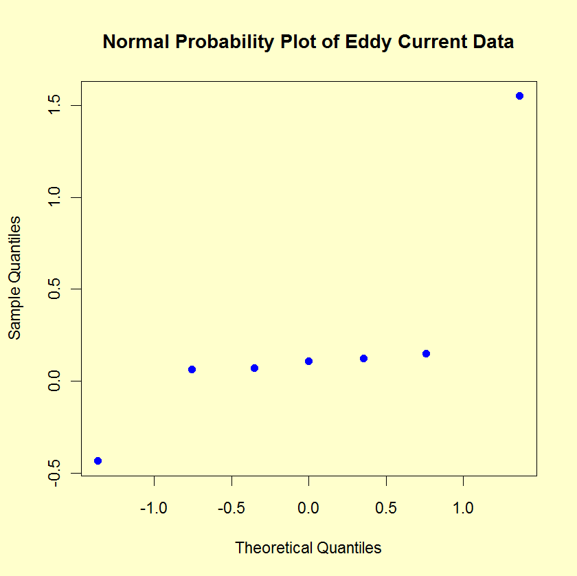

5.
Process Improvement
5.6.
Case Studies
5.6.1.
Eddy Current Probe Sensitivity Case Study
5.6.1.8.
|
Important Factors and Parsimonious Prediction
|
|
|
Identify Important Factors
|
The two problems discussed in the previous section (important
factors and a parsimonious model) will be handled in parallel since
determination of one yields the other. In regard to the
"important factors", our immediate goal is to take the full
subset of seven main effects and interactions and extract a subset
that we will declare as "important", with the complementary
subset being "unimportant". Seven criteria are discussed in
detail in section
1.3.5.18.2
in Chapter 1. The relevant criteria will be
applied here. These criteria are not all equally important, nor
will they yield identical subsets, in which case a consensus
subset or a weighted consensus subset must be extracted.
|
|
Criteria for Including Terms in the Model
|
The criteria that we can use in determining whether to
keep a factor in the model can be summarized as follows.
- Effects: Engineering Significance
- Effects: 90 % Numerical Significance
- Effects: Statistical Significance
- Effects: Normal Probability Plot
- Averages: Youden Plot
The first four criteria focus on effect estimates with
three numerical criteria and one graphical criterion.
The fifth criterion focuses on averages. We discuss each of
these criteria in detail in the following sections.
The last section summarizes the
conclusions based on all of
the criteria.
|
|
Effects: Engineering Significance
|
The
minimum
engineering significant difference is defined as
\( |\hat{\beta_{i}}| > \Delta \)
where \( |\hat{\beta_{i}}| \)
is the absolute value of the parameter estimate (i.e., the effect) and
\( \Delta \)
is the minimum engineering significant difference.
That is, declare a factor as "important" if the effect is greater
than some a priori declared engineering difference. We use a
rough rule-of-thumb of keeping only those factors whose effect is
greater than 10 % of the current production average. In this case,
let's say that the average detector has a sensitivity of 1.25 ohms.
This suggests that we would declare all factors whose effect is
greater than 10 % of 1.25 ohms = 0.125 ohms to be significant from
an engineering point of view.
Based on this minimum engineering-significant-difference criterion,
we conclude to keep two terms: X1 (1.55125) and X2
(-0.43375).
|
|
Effects: 90 % Numerical Significance
|
The 90 %
numerical
significance criterion is defined as
\( |\hat{\beta_{i}}| > (max |\hat{\beta_{i}}|) / 10 \)
That is, declare a factor as important if it exceeds 10 % of the
largest effect. For the current case study, the largest effect
is from X1 (1.55125 ohms), and so 10 % of that
is 0.155 ohms. This suggests keeping all factors whose effects
exceed 0.155 ohms.
Based on the 90 % numerical criterion, we would keep
two terms: X1 (1.55125) and X2 (-0.43375). The
X2*X3 term, (0.14875), is just under the cutoff.
|
|
Effects: Statistical Significance
|
Statistical
significance is defined as
\( |\hat{\beta_{i}}| > 2\mbox{ s.e.}(\hat{\beta_i}) \)
That is, declare a factor as "important" if its effect is more than 2
standard deviations away from 0 (0, by definition, meaning "no effect").
The difficulty with this is that in order to invoke this rule we need the
σ (the standard deviation of an observation).
For the eddy current case study, ignoring three-factor and higher
interactions leads to an estimate of σ
based on omitting only a single term: the X1*X2*X3
interaction.
Thus for our example, if one assumes that the three-factor
interaction is nil and hence represents a single drawing from a
population centered at zero, an estimate of the standard
deviation of an effect is simply the estimate of the interaction effect
(0.07125). Two such effect standard deviations is 0.1425. This rule
becomes to keep all \( |\hat{\beta_{i}}| \)
> 0.1425.
This results in keeping three terms: X1 (1.55125),
X2 (-0.43375), and X1*X2 (0.14875).
|
|
Effects: Probability Plot
|
The normal probability
plot can be used to identify important factors.
The following graph shows the normal probability plot of
the effects.

The normal probablity plot clearly shows two factors displaced
off the line, and we see that those two factors are X1 and
X2. Thus, we would keep X1 (1.55125) and
X2 (-0.43375).
|
|
Effects: Youden Plot
|
A DOE Youden plot can
be used in the following way. A factor is "important" if it
is displaced away from the central-tendency bunch in a Youden
plot of high and low averages.

For our example, the Youden plot clearly shows a cluster
of points near the grand average (2.65875) with two displaced
points above (X1) and below (X2). Based on the Youden
plot, we keep two factors: X1 (1.55125) and
X2 (-0.43375).
|
|
Conclusions
|
In summary, the criterion for specifying "important" factors
yielded the following:
- Effects, Engineering Significant:
|
X1 X2
|
- Effects, Numerically Significant:
|
X1 X2 (X2*X3 is borderline)
|
- Effects, Statistically Significant:
|
X1 X2 X2*X3
|
- Effects, Normal Probability Plot:
|
X1 X2
|
- Averages, Youden Plot:
|
X1 X2
|
All the criteria select X1 and X2. One also includes
the X2*X3 interaction term (and it is borderline for
another criteria).
We thus declare the following consensus:
- Important Factors: X1 and X2
- Parsimonious Prediction Equation:
\( \hat{Y} = 2.65875 + 1.55125 X_{1} - 0.43375 X_{2} \)
(with a residual standard deviation of 0.30429 ohms)
|


{kind=link}